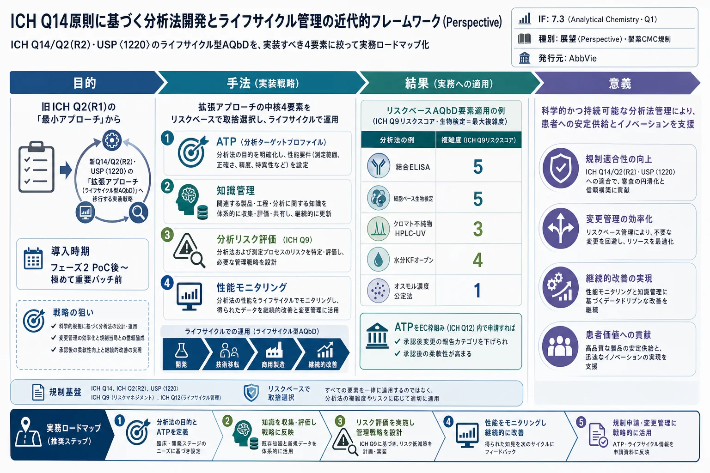

ICH Q14原則に基づく分析法開発とライフサイクル管理の近代的フレームワーク（Perspective）

<!-- Eberle et al., Anal. Chem. 2025, 97, 12−21（Perspective）の全訳密度日本語版。 規制・CMC戦略が中心のため practitioner レベル。表1〜4は全て表で保持。 実験データはなく概念・戦略中心の論文。図（Fig.1–3）は原文参照。 -->
書誌情報
- 標題（原題）: A Modern Framework for Analytical Procedure Development and Lifecycle Management Based on ICH Q14 Principles
- 著者: Max Eberle, Jamie T. Wasylenko（責任著者）, Drazen Kostelac, Sarah Kiehna, Adam Schellinger, Zhaorui Zhang, Jason D. Ehrick
- 所属: AbbVie, Inc.（米国イリノイ州ノースシカゴ）／AbbVie Deutschland GmbH & Co. KG（ドイツ・ルートヴィヒスハーフェン）
- 掲載誌・巻号・DOI: Analytical Chemistry, 2025, 97, 12−21. DOI: 10.1021/acs.analchem.4c04521（Perspective）
- インパクトファクター: 7.3（Analytical Chemistry, JCR 2024 / Clarivate。Q1）
- 受理経過: 2024年8月23日受領／12月9日改訂／12月10日受理／12月20日公開。© 2024 American Chemical Society
- 利益相反: 全著者はAbbVie社員でAbbVie株を保有しうる。AbbVieが研究を後援・資金提供。
補足: 本論文は実験論文ではなく、製薬業界の「分析法バリデーション」の考え方を、20年続いた旧ガイドライン（ICH Q2(R1), 2005年）から新しいライフサイクル型ガイドライン（ICH Q14, Q2(R2), USP〈1220〉）へ移行するための実装戦略を論じた展望（Perspective）。生薬・漢方QCの直接の内容ではないが、「分析法をどう開発し、承認後もどう管理するか」という品質保証の枠組み（AQbD）は、天然物・方剤の品質管理法を規制当局向けに整備する際の骨格として重要。なお本文脚注に「TSUMURA & CO（ツムラ）」からのダウンロード記録があり、漢方メーカーの規制対応での関心を示す。
要旨（Abstract）
本論文は、主に ICH Q2(R1) ガイドライン（2005年）に由来する現行の分析法バリデーション実務を検討し、製薬業界の分析化学における最新ガイドライン（ICH Q14/Q2(R2)、USP〈1220〉）を採用する戦略を提示する。これらの文書は、方法の開発・適格性確認・バリデーションへのライフサイクルアプローチを強調し、将来の申請書類構造の中心となる全体論的でリスクベースの管理戦略と整合する。
ICH Q14に記述された拡張アプローチ（Enhanced Approach）の主要要素、すなわち分析ターゲットプロファイル（ATP）、知識管理（Knowledge Management）、分析リスク評価（Analytical Risk Assessment）、性能モニタリング（Performance Monitoring）を議論し、分析法開発とライフサイクル管理のための明確な分析的Quality by Design（AQbD）フレームワークに統合する。リスクベースアプローチを活用する際は、承認後の柔軟性という便益と、追加要素の実装に必要な資源投資との間でバランスを取る必要がある。長期的には、提案戦略は分析開発を合理化し、よく理解された分析法をもたらし、ライフサイクル管理を簡素化するはずである。
序論（Introduction）
製薬業界で用いられる方法バリデーションの原則は、主に2005年に確立された ICH Q2(R1) に基づく。しかしこれらのガイドラインは、ICH Q8・Q10・Q12 といったより新しいガイドラインが提唱するライフサイクルアプローチを欠いている。新たに発行された分析ガイドライン（ICH Q14、Q2(R2)、USP〈1220〉）は、このライフサイクルアプローチを分析法の開発・適格性確認・バリデーションに取り込み、最終的により全体論的でリスクベースの管理戦略を支援することを目指す。
このより近代的な分析開発アプローチは、進行中のICHガイドライン改訂と整合し、これら新原則を戦略的に採用することでいくつかの利点が得られうる。主要なCMC（化学・製造・管理）領域でリスクベース戦略を活用し、方法が目的適合（fit-for-purpose）であることを確保し、ICH Q12・Q14を通じて承認後変更管理の柔軟性を高めることで達成される。
著者らは新ガイドラインを詳細にレビューし、ICH Q14に記述された「拡張アプローチ」から選択した要素の的を絞った実装機会を同定した。分析範囲は主に、小分子・バイオ医薬品の原薬・製剤のリリース試験・安定性試験の分析法、および小分子原薬の規制上の出発物質（RSM）・中間体リリース法に適用した。工程内管理や統合された非規制ラボでの拡張特性評価、原材料試験・洗浄操作、公定書（compendial）法は含めていない。
ICH Q14の拡張アプローチ（Figure 1）には多数の要素があるため、実装に最も有益な要素を優先することが極めて重要である。著者らは方法開発・バリデーション過程を最適化する潜在力が最も高い4つの主要領域を同定した: 分析ターゲットプロファイル（ATP）、知識管理、分析リスク評価、性能モニタリング。これらは拡張アプローチの任意要素だが、戦略的適用により分析開発とライフサイクル管理を合理化し費用対効果を高め、分析法開発の近代的フレームワークを提供する。
拡張アプローチの1つ以上の要素の選択は、プログラムが極めて重要な（pivotal）臨床試験に進む段階で、個別の方法について、プロジェクトへの便益と商業化での方法の想定使用を考慮して行える。
分析ターゲットプロファイル（ATP）
ICH Q14によれば、ATPは「分析測定の意図する目的と想定される性能基準を記述する性能特性の前向きな要約」である。ATPは品質目標製品プロファイル（QTPP）の分析版に相当する。ATPは特に2つを定義する: 分析試験の目的と、報告値（reportable value）の品質要件。これは分析法の全ライフサイクルの参照点として機能し、対応する重要品質特性（CQA）と規格を通じてQTPPと全体的管理戦略を結びつける。ATPは、変更が意図または想定されるときに変更を可能にするため、主要性能特性に焦点を当てる。開発中に製品（例: 製造工程）や管理戦略に変更があると、これらの変更が追加イベント（ATPの更新を含みうる）を引き起こす。したがってATPは開発中に開始される内部の「生きた文書（living document）」として機能し、その一部を臨床（IND, IMPD）・商業（MAA, NDA, BLA）製品向けに外部使用できる。
ATPに記述される品質・性能要件に加え、方法開発の一部として品質関連でない追加要件を考慮することも重要である。これらは方法のエンドユーザーと協働して定義すべきで、チェックリストやスコアカードとして収集し、最終的な方法が品質管理（QC）ラボでの使用に適切であること（その「QC-ability」）を確保する。このチェックリストには、サンプルスループットやターンアラウンドタイム、分析あたりのコスト、使いやすさ、装置の可用性、分析者訓練などのパラメータを含みうる。品質要件は通常、規制申請のため外部共有されるが、これら非品質要件は共有されない。
ATPの定義は明確に見えるが、実際の実装、性能許容基準の導出、手順開発中・開発後の戦略的使用はあまり明確でない。文献にはガイダンスを提供する例がいくつかある。以下の推奨は既存ガイダンスを拡張し、手順ライフサイクル中の適用の戦略的問いと便益に取り組むことを目指す。
ATPはいつ導入すべきか？
ICH Q14によれば「ATPは技術の選択、手順の設計・開発、およびその後の性能モニタリングと分析法の継続的改善を促進する」。Verchらによれば、ATPは技術選択と方法開発を推進するため、製品/工程のライフサイクルの初期段階で定義するのが最適である。これは、フェーズ3での最終バリデーション完了前に十分な開発時間を確保するため、開発の初期段階を指す。
ATPに含まれる要件は、管理戦略を通じた製品・工程理解の開発から生じる。フェーズ1では製品・工程の知識が限られ、適切な分析要件の導出と品質特性の定義が困難である。既存の規制・ガイドラインから明確な期待が導けない場合は特にそうである。この場合、規格・分析要件は事前知識と初期特性評価結果に基づくプラットフォームアプローチを用いてよい。ATPは新技術で品質特性を初めて扱う際に有用で、異なる選択肢を評価する有用な枠組みを提供しうる。
臨床開発のフェーズ1では、安全性情報がFIH（First in Human, ヒト初回投与）試験で収集され、製品の製造工程・製剤はまだ開発中である。製品の製造工程は初期開発の臨床試験から後期/商業生産へしばしば変わる。緩和できない安全性問題が同定されればプログラムは中止される。これらの理由から、フェーズ1でのATPの初期文書化には最小限の労力を費やすべきである。
FIH製品と初期臨床試験を通じて、各分析測定カテゴリー（アッセイ、標的不純物、クロマト不純物など）につきデフォルトの事前承認済み方法適格性パラメータと許容基準の使用を推奨し、適切な正当化があれば調整もできる。
バランスの取れたアプローチは、標準的なCMC開発タイムラインのプログラムでは、フェーズ2での初期の概念実証（Proof of Concept, PoC）後にATPを実装することである。加速臨床開発タイムライン（PRIME、Breakthrough、Sakigake〔先駆け〕指定）のプログラムではこの時点がずれうる。一般に、ATPは極めて重要な臨床バッチのリリース、一次安定性バッチの生産、または最終商業工程で製造される最初のバッチのいずれか最も早い時点より前に導入すべきである。
フェーズ2で概念実証が得られQTPPの他の側面（許容できる安全性・薬剤化可能性）が達成されれば、商業化のための製造工程・製剤の最終化に向けた努力がなされる。これらの活動が始まると、この製品のATPを正式化する利点が増す。この時点で、方法のエンドユーザーから特定の非品質要件を集め、分析法がQCラボに適切であることを確保することも重要である。
ATPと関連情報の文書化の労力は大きく、後期臨床開発（フェーズ3）中は多数の活動が起きるため、どの追加努力が価値を加えるかを決めるいくつかの要因を考慮すべきである。ATPの導入はリスクベースかつプロジェクト固有の決定で、ICH Q14の拡張アプローチの任意要素である。分析手順性能のモニタリングにおいて、ATPは統計的評価に加えて管理戦略の文脈を提供し、変更（製造工程や製剤）後の許容できる手順性能を確認できる。開発リスクについて、ICH Q9(R1)は品質リスク管理活動の必要な形式性と範囲を複雑性（Complexity）・重要性（Importance）・不確実性（Uncertainty）と定義する。
複雑な手順は特にATPの便益を受ける。パラメータ最適化や製品固有の分析要件（多属性法での特性評価で同定された特定の脆弱性）への対処をしばしば要するためである。これらの手順は後期開発でブリッジング作業を要する可能性が最も高い。ATPは管理戦略とQTPPから導いた要件にリンクする参照点として機能する。ATPは分析リスク評価での手順パラメータ評価にも影響しうる。性能要件が高いほど堅牢性試験やシステム適合性試験（SST）の設定を通じたリスク緩和のレベルが高く必要になりうるためである。確立された公定書手順は通常、不確実性が低くATPの便益が少ない（広範な最適化が通常不要なため）。
分析手順の不確実性のレベルは柔軟性の必要性にも影響し、これはATPに取り込める。例えば、特定技術に対し報告結果の品質に影響しうる様々な設計差を持つ複数の装置が利用可能な場合、ATPへの適合が装置変動でCQA要件を満たす鍵となる。開発中、内部ATPは異なる手順にブリッジングする際のバランスの取れた決定を可能にすべきである。承認前後で変更に遭遇する確率が低い安定な手順は、ATPが可能にする柔軟性の便益が少ない。
ATPでバイアスと精度の適切な限度を設定する際、USP〈1220〉は次の考慮を推奨する: (1) 測定される品質特性（QA）の重要性、(2) 許容できない誤差の発生リスク、(3) QAの許容基準範囲、(4) 分析誤差に起因する影響（臨床安全性・有効性）の可能性。
規格範囲を使って分析手順性能の要件を導くことにはいくつかの根本的課題がある。しばしば許容基準の決定は能力駆動（工程・分析変動）で、類似製品の事前知識や臨床・非臨床データの活用への焦点が薄い。FDAは後者を奨励するが、規制当局間の世界的整合は欠けている。規格設定は限られたバッチ結果に基づく製造変動と組み合わさった過去の分析変動にもしばしば駆動され（高い方法性能がより厳しい許容基準に寄与）、USP〈1220〉のATPアプローチを完全採用しようとすると循環論法の状況を招く。
純粋な能力面への焦点を減らした患者中心（patient-centric）の許容基準設定アプローチは、より予測可能な規格をもたらす可能性が高い。このアプローチは、実際の方法能力や使用技術に依存しない、ATPの患者中心の分析要件の導出を可能にする。能力は継続的モニタリングアプローチで理解できる。
ATPの戦略的使用
上述の通り、ATPの文書化には最小主義的アプローチを初期に用い、商業製造工程が最終化されたときに正式化できる。
初期臨床開発中、初期ATPは方法選択と継続的開発を促進する参照点として機能する。ATPは臨床開発中に製品管理戦略とともに進化するため、初期段階でIND/IMPDにATPを提出しても有益とはみなされない。ATPは開発後期に最終化し、販売承認申請時または承認後に提出できる。拡張アプローチ要素として、ATPはICH Q12が導入した確立条件（Established Conditions, EC）の一部として、またはEC枠組みとは独立に提出できる。
ATPの提出は製品と分析管理の深い理解を示せる。方法変更後の方法同等性の正当化や、申請中の規制当局とのコミュニケーション促進に活用できる参照として機能しうる。しかしEC枠組み外でのATP提出は、申請区分に影響せず提出数を減らさない。開発作業量と比べ、EC枠組み外でATPを提出する便益は限定的である。
EC枠組み内でATPを提出することで、より大きな便益が得られる。ICH Q12により、規制申請のEC枠組みにはEC・非EC・リスク区分・報告区分と正当化、および裏付けデータが含まれる。分析手順のEC枠組みは分析法開発・バリデーション作業と分析リスク評価に基づくため、初期開発中の焦点領域ではない。
ATP（ICH Q2でいう「適切な性能基準」）、EC枠組み、ブリッジング戦略、対応する裏付けデータは、各EC・非ECについてICH Q12に記述された承認後変更管理プロトコル（PACMP）と類似の情報を合わせて提供する。FDAとEMAもPACMPアプローチのガイダンスを公表している。Table 1に示すように、PACMPで推奨される主要要素の大半は、ICH Q12/Q14の拡張アプローチの分析申請要素にも簡潔に反映される。ATPは提案された方法変更の前後で方法性能を統制する究極の許容基準として機能する。PACMPと同様、ICH Q12/Q14でEC枠組みを提出すると、適切な正当化により特定変更の報告区分を下げ、承認後の提出・運用の労力と不確実性を減らせる可能性がある。より複雑な分析法の変更（分析手法の変更など）には、ICH Q14の推奨通り完全なPACMPが必要となりうる。
Table 1. 比較可能性プロトコル（ICH Q12）とICH Q12/Q14下の分析申請の対応
| 比較可能性プロトコル（ICH Q12） | ICH Q12/Q14下の分析申請 |
|---|---|
| 提案するCMC変更の記述と根拠 | 特定のECへの潜在的変更をEC表に記述 |
| 製品品質管理への変更影響のリスク評価 | 各ECに関連するリスクをEC表に含め、リスク評価を方法バリデーション項に記載 |
| 提案変更を評価するため実施する試験・許容基準の記述 | ブリッジング戦略とEC表に記述 |
| 承認済み管理戦略の適切性の議論 | ATP・ブリッジング戦略の適切性をリスク評価と開発/バリデーションデータで正当化（方法バリデーション項） |
| 提案報告区分 | EC表に含める |
| 裏付け情報と解析 | 裏付けデータ（開発・バリデーション・リスク評価）を方法バリデーション項に記載 |
これらの潜在的な大きな便益にもかかわらず、承認された分析申請内容について、各地域でのICH Q12採用状況と法制・ガイダンスに応じ、世界の規制当局間で調和を達成するのは困難と予想される。本原稿準備時点で、Q12は米国・日本・中国でのみ実装されている。加えて、当局ごとに特定の確立条件の提案報告区分に異なる見解を持ちうる。報告区分の削減の種類に応じ、承認後管理への便益は変わる（Table 2）。
Table 2. 承認後方法変更の報告区分削減の便益
| ICH Q12/Q14下の分析申請による報告区分の削減 | 想定便益 |
|---|---|
| 事前承認 → 中程度以下の届出 | 高 |
| 中程度の届出 → 低い届出以下 | 中 |
| 低い届出 → 報告不要 | 低 |
| 変更なし | なし |
事前承認・中程度の届出という報告区分の削減がより大きな便益を生み、分析法の拡張アプローチ申請の検討時により望ましい。複雑性のため、想定便益が追加開発努力・規制リスクを上回るかを、製品・手法/CQA・地域に基づいて評価することが重要である。同時に、規制申請を通じて拡張アプローチ要素（ATP・ECの裏付けデータなど）に関する当局の見解を実世界経験として理解することが重要で、これが最終的に複数地域での拡張アプローチの承認内容の調和達成に役立ちうる。
知識管理（Knowledge Management）
知識管理（KM）は製薬業界で重要な分野であり、これら能力への投資増加がそれを裏付ける。しかし多くの場合、正式なKMシステムはまだ実践されていない。ICH Q12・Q14の発行により、知識のキュレーション・普及・適用の体系的アプローチ確立の重要性がさらに高まった。手順知識を効率的に生成・移転する能力は、内部・外部の移転活動の全体リスクを減らし、機構的相互作用の理解向上を示すことでより柔軟な承認後変更を可能にし、類似製品の事前知識で限られたデータセットを補強することで、利点を提供する。
分析リスク評価（Analytical Risk Assessment）
適切なリスク評価は構造化された知識管理によって可能になる。ICH Q9(R1)も「不確実性は効果的な知識管理により低減されうる」と指摘する。したがって知識管理を品質リスク管理（QRM）プロセスに統合することが、資源の効率的使用と便益ある成果の最大化の鍵である。分析リスク評価もこれに含まれる。
製品タイプの経験が増えるにつれ、対応する分析手順開発をめぐる暗黙知・形式知の総体も増える。方法理解は初期・後期開発中や商業使用中に課題に遭遇するにつれ育つ。これら課題の解決は、手順パラメータ（緩衝液pHなど）と属性（ピーク面積など）の間の重要な相互作用について教訓を提供し、性能特性（精度など）に影響しうる。こうした知識を捕捉・キュレーションすれば将来の手順開発に利用でき、より的を絞った意味のある開発試験（実験計画）を可能にする。この反復アプローチはプラットフォーム手順で特に効果的で、新しい適用ごとに分析手順の知識総体が育つ。
ICH Q14拡張アプローチの基礎テーマは、開発中に分析法の体系的理解を構築することで全体的プログラムリスクを減らし、ICH Q12原則を通じて承認後の柔軟性を高められるということである。しかし分析リスク評価と開発試験が類似プログラム・手順の実質的な事前知識に支えられていなければ、ゼロから始めるのは非常に資源集約的になりうる。特に加速プログラムでは、厳しいタイムラインのためプロジェクトチームがこれら活動を完全に実行するのをためらいうる。事前知識の活用がQRMと開発活動を合理化する最も効率的な方法である。
分析法開発の知識管理
初期段階の方法開発の目標は、意図する目的に適した科学的に健全な方法を作ることである。特定技術の生きた知識データベースは、新化合物の開発や後期段階への準備を支援・誘導しうる。この段階で正式なリスク評価は不要である。代わりに、個別プロジェクトの教訓を、正確性・精度へのリスクとともにパラメータ-属性相互作用の形で含めるべきである。後期段階プロジェクトは、方法開発・最適化からの教訓を知識データベースに体系的に文書化すべきである。書かれた手順の詳細レベルは、分子固有の開発試験と同じ分析技術で試験した類似分子の事前知識に基づき、同定された重要パラメータを反映すべきである。
したがって分析法知識データベースは新文書の作成を要さず、分析者が最新の利用可能知識を、個別分子に最も高いリスクをもたらすパラメータ・属性の的を絞った堅牢性試験に変換できるようにする。このアプローチはプラットフォーム技術と類似分子で特に有用である。
後期段階の分析リスク評価
すべての分析手順が正式な分析リスク評価を要するわけではない。ICH Q9(R1)によれば、QRMの形式性を定める要因は複雑性・不確実性・重要性である。高複雑性・高不確実性の手順が正式なリスク評価の便益を最も受ける（Figure 2）。例えば生物検定（Bioassay）のような複雑な方法は変数が多く、適切な堅牢性試験の必要性が増す。事前知識を用いた正式なリスク評価により、正確性/精度に最も高いリスクをもたらすパラメータ-属性相互作用を標的とした堅牢性試験が可能になり、最も価値ある手順理解を生む。同様に、プラットフォーム法は不確実性を減らせる（ラボでよく知られ複数分子にわたるパラメータ-属性相互作用の事前知識に支えられるため）。低複雑性・低不確実性の手順には低レベルの形式性で十分。正式な分析リスク評価の必要性は適切なスコアリングシステムで導ける。
リスク評価を行う場合、拡張堅牢性試験の前に実施し、すべての分子に関連する共通の技術関連リスクを含めるべきである。特性評価・開発から導いた分子固有リスク（特定の分子脆弱性や分析要件）も含めるべき。事業上の推進要因とQC-abilityリスク（アッセイ時間、試薬の単一調達、パラメータ柔軟性の必要性）を、最終開発と商業ラボへの手順展開の前に強調・対処すべき。USP〈1220〉が指摘するように、移転活動は分析手順性能適格性確認（APPQ）の一部である。移転活動からの学びは、その手法の最終リスク評価と分析法知識データベースに取り込むべき。効率向上のため共バリデーション（co-validation）アプローチを検討すべき。
よく設計された堅牢性試験が方法の柔軟性を可能にする
正式な分析リスク評価の使用は、より焦点を絞った意味のある堅牢性試験につながる。堅牢性で試験するパラメータと範囲の選択は、リスク緩和と手順の将来の商業適用への関連性に依存する。ICH Q14に記述されるように、適切に正当化・バリデートされた分析手順パラメータ範囲は、承認範囲内の柔軟性を企業の品質システム内で管理できるようにする。堅牢性試験の設計前に商業ラボで必要な柔軟性の量を理解すれば、選択パラメータのより的を絞った試験（正確性・精度をカバーするスパイク・非スパイク試料を含みうる）につながる。すべてのデータ許容要件が満たされれば、最終バリデーション計画はこれら実験を参照し、通常操作条件（設定値）でICH Q2バリデーション要件を完了するのに必要な残りの実験に焦点を当てられる。堅牢性試験で適切な範囲に挑戦することで、実証済み許容範囲（PAR）内の柔軟性をバリデーション報告書で主張できる。PARと堅牢性データは分析手順項（3.2.S.4.2/3.2.P.5.2）と分析手順バリデーション項（3.2.S.4.3/3.2.P.5.3）に提出でき、製品の商業寿命中に支持範囲内の柔軟性を可能にする。書かれた手順は継続的性能モニタリングと運用一貫性を促進する設定値を含むべき。承認済みPAR内の手順の更新・変動は医薬品品質システム（PQS）で管理できる。
連続変数（注入量など）ではPAR内の柔軟性を主張できるが、離散変数（異なるカラムや試薬タイプ）の変動は通常、より多くの事前努力を要する。これはブリッジング試験中に実証された同等性やATP要件への適合の実証を含みうる。
方法操作可能設計領域（MODR）は複数のパラメータ変更の組み合わせに柔軟性を主張するより精巧なツールだが、バリデーションの複雑性を伴い連続パラメータに限られる。したがってMODRアプローチの開発は追加の実験投資と統計モデリングを要する。ゆえにその使用は、より基礎的なAQbD要素が確立された後に最も効果的である。
移転リスク評価
送り側・受け側ラボ間で、装置・試料調製・その他パラメータに関する体系的で十分詳細なギャップ分析を行うことが重要である。専門性・訓練の必要性の評価に加え、分析ワークフロー（装置・材料・試料調製など）に沿った構造化ギャップ分析（リスク評価含む）を推奨する。同定したギャップの評価には以前の初期/後期フェーズのリスク評価を参照すべき。手順開発と以前の移転から得た事前知識を体系的に適用することで、方法移転中の問題の可能性を減らせる。ギャップ分析の形式性・詳細レベルは開発段階とともに増すべきである。
継続的性能モニタリング（Ongoing Performance Monitoring）
バリデーション実験は標準化条件下で行われるため、方法の長期変動は通常過小評価される。同時に、真のアッセイ変動（分析者・カラム・装置）の理解は、安定性試験中の潜在的トレンド評価の鍵である。
臨床開発中の性能モニタリングは、工程・製剤変更の方法性能への影響の可視性を高め、必要なら再開発努力をより早く引き起こせる。後期臨床開発中、商業製造工程を代表する材料のバッチ分析中に最終手順を用いて方法性能をモニタリングすると、方法の正確性・精度のより良い推定が得られ、バリデーション前にリスクを浮き彫りにできる。さらに、最終方法条件と品質レベルで十分な関連データが利用可能なら、バリデーション中の試験範囲を減らすか免除できる（中間精度など）（Figure 3）。
こうした戦略を支援するため、一定の方法条件下で起きた工程・製剤・規格への変更を強調し、対応する性能データセットへの潜在的影響を評価して最終バリデーションのデータ許容を正当化すべき。特定方法の性能モニタリングの導入はリスクベースでプロジェクト固有の決定である。歴史的に、開発中の性能データのトレンド分析は標準アプローチとして確立されてこなかった。非自動ワークフローと手動データ集約のリスクにより実装が限られてきた。より効果的で包括的なアプローチを確立するため、以下を推奨:
- 重要な方法の選択された性能データ（Table 3「AQbD要素のリスクベース適用」参照）をデータ取得システムから自動抽出し、適切なソフトウェアで管理図（control charts）を通じて可視化する。手動データ移転とプロジェクトチームの作業負荷を除く。
- ATPから導いた性能限度（バリデーションの精度要件など）は、品質要件に対する方法性能のレビューを可能にする。これらデータは後期方法開発中に商業ラボと協働してレビューすべき。
- 類似方法/モダリティの事前知識から導いた性能限度は、内部ベンチマークに対する方法性能のレビューを可能にする。プラットフォーム手順で特に関連する。
- 性能データの解釈は一定の方法条件を考慮すべき。異なる方法条件で生成したデータは管理図で明確に見えるようにすべき。
管理図のデフォルト使用による追加の便益: 過去性能とATP限度による変更正当化の促進、移転支援（方法知識履歴）の促進、性能ドリフトの可視化（内部拠点・第三者ラボ間など）、変動原因の理解と焦点を絞った管理の実装（装置の年数・保守、カラム寿命/供給業者、訓練）。
これら便益にもかかわらず、以前のデータと事前知識に依拠して手順性能を結論づけるリスクもある。類似方法/モダリティの事前知識に基づいて結論づける際、対象製品への事前知識データの適用可能性を正当化すべき。
全体像の維持: 方法開発履歴
各分析手順の開発中、活動と文書が蓄積する。関連文書を効率的にリンク・アクセスし、開発のディリスク（derisking）と内部・外部の手順移転活動を支援する適切な知識パッケージを確立する能力を維持するには、構造化アプローチが鍵である。新薬開発プロジェクトあたりの分析手順は多数あるため特に重要である。プラットフォーム手順は特に初期フェーズで開発努力を軽減できるが、商業規制申請と市場承認後を通じてプロジェクトあたり多くの開発知識が生成される。
書かれた手順は方法実行の中心文書である。ATP要件に従った報告値生成に必要なすべての指示を含むか参照すべきである。
Table 3は、AQbD要素が方法開発に実質的便益を提供すると想定される時期を決めるための異なる要因を考慮する可能な枠組みを示す。1手順で複数の品質特性を測定する場合、最高スコアが適用される。示すスコアは例に過ぎず、各プロジェクトで独立に評価される。
Table 3. AQbD要素のリスクベース適用（ICH Q9リスク要素は1=低〜5=高、想定柔軟性ニーズは1=低〜3=高で採点）
| 品質特性 | 方法タイプ | 複雑性 | 重要性 | 不確実性 | 堅牢性 | 頑健性 | 承認後変更 | ATP | 正式リスク評価/堅牢性試験 | 性能モニタリング |
|---|---|---|---|---|---|---|---|---|---|---|
| 力価（標的結合活性） | 結合ELISA | 5 | 5 | 1 | 3 | 3 | 1 | 任意 | 任意 | あり |
| 力価（細胞ベース） | 細胞ベース生物検定 | 5 | 5 | 3 | 3 | 3 | 3 | あり | あり | あり |
| オスモル濃度 | 公定法 | 1 | 3 | 1 | 1 | 1 | 1 | 任意 | 任意 | 任意 |
| クロマト不純物 | HPLC-UV | 3 | 5 | 2 | 1 | 2 | 3 | あり | あり | あり |
| 水分 | KFオーブン | 4 | 3 | 3 | 2 | 2 | 3 | 任意 | あり | 任意 |
書かれた手順の内容と詳細レベルの根拠を提供する補足文書が、開発の様々な段階で生成・更新される。これら裏付け情報文書の内容と範囲は、分析要件の元文書（規格やCQAリスク評価）とプロジェクト固有の考慮に駆動される。
トレーサビリティと容易にアクセスできる方法開発履歴を確保するため、中〜高複雑性の方法に以下を推奨: 各非公定書手順に手順補足ファイル（ライフサイクル全体の裏付け情報・文書の要約）を添付する；関連する独立文書（ATPや方法適格性/初期バリデーション報告書）と開発トレーサビリティを支援する情報（技術選択の根拠、方法ゲートレビューの結果、変更履歴）への参照を含める；変更管理を支援し移転・申請活動を促進するため、いくつかの必須の非バリデーション文書（ATPやリスク評価）を別途利用可能にすると有益；非バリデーション関連文書の効率的な作成・更新を確保するため、プログラムがフェーズ3に進むまで形式性を最小限に保つ。
規制インテリジェンスの活用（Leveraging Regulatory Intelligence）
規制インテリジェンス（RI）は、要件が進化する中で開発活動を実際の要件に合わせる追加機会を提供する。RIは規制申請と当局との対話、および規制インテリジェンスDB・外部刊行物・会議・コンソーシアムの維持を通じて得られる。何が受け入れられ何が問われたかの主要情報は、開発の特定段階での当局の開発・バリデーションへの期待に貴重な洞察を提供しうる（Table 4）。この情報をキュレーションし分析科学者が容易にアクセスできるようにすることは、特定段階での投資レベルとバリデーション活動範囲の戦略的決定の重要な推進要因を提供する。
推奨: 過去の申請・対話の内部規制インテリジェンスDBは、分析法・管理に関連する規制フィードバックの抽出を可能にする；方法開発・バリデーション要件や承認パッケージに関する外部規制インテリジェンス（コンソーシアム・ワークショップ・専門家パネル）は内部RIを補完しうる。内部・外部RIとも、一般的要件と国別要件・期待の双方に注意すべき。両ストリームを検索性・フィルタリング機能を強化した知識管理DBに供給し、分析開発中にシームレスに取り込めるようにすべき。
Table 4. Q14拡張要素が役立ちえた規制インテリジェンスDBの事例
| 申請タイプ | 当局の質問の要約 | Q14拡張要素はどう役立てたか |
|---|---|---|
| 小分子・販売申請 | 原薬QCの全方法の正確性・精度（併行・室内）・QL・DLのバリデーション許容基準の参照と根拠を提出せよ | 方法開発の知識管理と内部ATPが規格・性能基準の出所を文書化し、容易に回答できた |
| 小分子・販売申請 | 不純物X・Yの最小分解能をSSTに含めよ（堅牢性試験で分解能0.36・0.44で共溶出し選択的定量に不適） | 構造化された分析リスク評価と知識管理が分解能をこの方法の重要な性能課題として強調でき、性能モニタリングが経時的な典型分解能を示し堅牢なSST基準設定を助ける |
| 小分子・後期 | 不純物Xの規格はNMT 1500 ppmだがLC-MS法の直線性は0.5–120 ppmのみ。適切な範囲での直線性バリデーション結果を追加せよ | ATPが方法のバリデート範囲と提案規格の不整合を警告でき、構造化リスク評価が試料希釈をバリデート範囲内に収める指示を確保できた |
| バイオ・初期 | フェーズII試験だが結合力価ELISAの規格が50%–150%と広い。改訂または適切性を議論せよ | ATPが必要な方法性能要件を想定される商業製品規格と整合でき、性能モニタリングが経時的典型値を示し堅牢な規格設定・正当化を助ける |
| バイオ・初期 | icIEFより堅牢なペプチドマッピングを同一性試験に使わない理由を正当化せよ | ATPがフェーズ適合の同一性試験要件を概説しicIEF使用を正当化でき、規制インテリジェンス知識管理がicIEFを同一性試験として受け入れる国の洞察を提供できる |
実装の課題（Challenges for Implementation）
ICH Q14原則の実装にはいくつかの潜在的課題がある。堅牢なAQbDフレームワークの確立と包括的な開発・堅牢性・リスク評価の実施には多大な時間と労力を要する。ATPや性能モニタリングといった新要素の取り込みは、R&Dと製造間の慎重な計画・調整と、高度なデータ管理能力を要する。様々な拠点・部門にわたる分析リスク評価の均一性確保は困難である。手順補足と開発履歴の体系的維持・更新はトレーサビリティに不可欠。提案報告区分でのEC枠組みの定期的申請は、追加の開発・準備努力と地域ごとの受容差により、当初は十分な便益を提供しないかもしれない。これら課題を克服するには、すべての関係者がこれら実務をバランスよく適用する便益を理解する文化的転換が必要である。近代的アプローチ採用の明確な期待を確立するため、業界と規制当局の双方がコミュニケーションと協働に関与する必要がある。
結論（Conclusion）
約20年間、ICH Q2(R1)の方法バリデーションの指導原則が製薬業界の堅牢な分析開発戦略の基礎であった。ICH Q8・Q10・Q12のより新しいガイドラインは、方法の開発・適格性確認・バリデーションへのライフサイクルアプローチの重要性を概説してこれを拡張した。最新のICH Q14・Q2(R2)・USP〈1220〉ガイドラインは、このアプローチの包括的なAQbDフレームワークを提供し、リスクベース管理戦略と承認後変更管理の柔軟性を通じて戦略的優位を提供しうる。
AQbDへのリスクベースアプローチは、開発過程での意思決定に明確な枠組みを提供し、有効性・費用対効果・規制順守を確保できる。ただし、ICH Q14の最も有益な要素を優先する、バランスの取れた実装戦略が望ましい。AQbDアプローチを分析手順開発とライフサイクル管理に統合することは、手順のより大きな柔軟性・効率・理解の機会を提供する。ATPと堅牢な知識管理システムの使用は、効率的な方法開発と承認後維持に極めて重要である。最後に、規制インテリジェンスの活用と包括的な手順開発履歴の維持は、リスクを緩和し規制当局とのコミュニケーションを高められる。
著者らは、最新の規制ガイドラインと整合する、分析法開発・バリデーションへの近代的でリスクベースのアプローチを実装する包括的ロードマップを提示した。このアプローチは効率向上・リスク低減・承認後変更の柔軟性向上を含む潜在的便益を提供する。
訳者補足
- この論文の要点を一言で: 「分析法バリデーション」は長らくICH Q2(R1)（2005年）の"一発検証"型だったが、新ガイドライン群（Q14/Q2(R2)/USP〈1220〉）は"ライフサイクル型"（開発〜承認後まで一貫管理）に変わる。全部やると大変なので、費用対効果の高い4要素（①ATP＝分析の目標仕様書、②知識管理、③リスク評価、④性能モニタリング）だけをリスクに応じて選んで導入せよ、というのが製薬企業（AbbVie）からの実務提言。
- ATP（分析ターゲットプロファイル）とは: 「この分析法で何を、どのくらいの精度で測れればよいか」を先に決めておく目標仕様書。製剤側のQTPP（品質目標製品プロファイル）の分析版。これがあると、方法を変更したときに「同等だ」と示す基準になり、承認後の変更が楽になる。導入時期は「フェーズ2のPoC後〜重要バッチ前」が目安。
- なぜMODRの話が出てくるか: 本サイトの他論文（イチジク・黄連QbDなど）に出てくる「設計空間（MODR）」は、この論文では「柔軟性を主張する精巧なツールだが検証が複雑で連続パラメータに限られる。基礎的AQbD要素を固めた後に使うのが効果的」と位置づけられている。つまりMODRは"上級編"。
- 生薬QCとの関わり: 直接の生薬論文ではないが、漢方製剤・生薬の多成分定量法を当局向けに整備・維持する際の「型」を示す。ツムラからのダウンロード記録があるのも、漢方メーカーがこの規制枠組みへの対応を検討していることを示唆する。
- 図（Fig.1 最小 vs 拡張アプローチ、Fig.2 リスク評価の適用、Fig.3 性能データ活用）は原文参照。